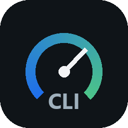

Speedtest CLI Android
Latência, jitter, download e upload — e comparação de dois servidores
O que o app faz
- Mede no próprio aparelho: latência, jitter, download e upload, sem abrir outro app.
- Compara dois servidores lado a lado: mede o servidor A e depois o B na mesma conexão, com ✓ no melhor de cada linha e a variação em % (Δ).
- 32 servidores Claro em todo o Brasil (inclui os três de Florianópolis: 16338, 21732 e 1201).
- Usar minha localização escolhe o servidor mais próximo e sugere outro da mesma cidade para comparar.
- Copiar resultado (JSON) com as duas medições juntas, no mesmo formato do CLI da Ookla.
Como instalar
- Toque em Baixar para Android e abra o arquivo baixado.
- Se o Android pedir, permita instalar apps desta fonte (navegador ou gerenciador de arquivos).
- Toque em Instalar.
- Se o Google Play Protect avisar que o app não foi analisado, toque em Enviar para verificação (gratuito) ou, em Mais detalhes, instale sem verificar. O aviso aparece porque o app não vem da Play Store.
Exemplo de comparação
| Servidor A | 16338 Claro Fibra - FLN |
| Servidor B | 1201 PoP-SC/RNP |
| Ping | 12,3 ms vs 14,1 ms |
| Jitter | 1,2 ms vs 1,8 ms |
| Download | 300,0 Mbps vs 250,0 Mbps |
| Upload | 120,0 Mbps vs 118,0 Mbps |
Novidades da 0.1
- Primeira versão: medição de latência, jitter, download e upload.
- Comparação de dois servidores lado a lado, com Δ% e ✓ no melhor.
- Servidor mais próximo pela localização e sugestão de outro da mesma cidade.
- Cópia do resultado em JSON (as duas medições).
Privacidade
O app só faz medições de velocidade. Não envia resultados, não pede login e não acessa seus arquivos. A localização (opcional) serve apenas para sugerir o servidor mais próximo.